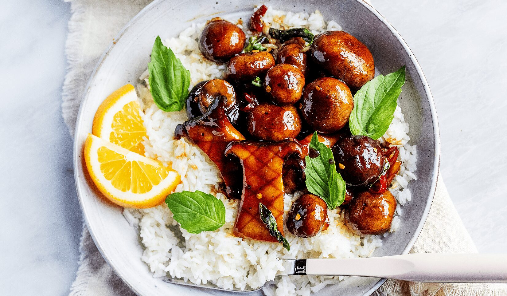

How to Cook Vegan Orange-Glazed Mushrooms
by Kylie Perrotti
Equipment
Saucepan
Wide pot
Ingredients
¼ cup maple syrup
1–2 red Fresno chili peppers (sliced into rounds, or use crushed red pepper to taste)
1 tablespoon fig miso (or white miso paste)
2 oranges (juiced)
1 tablespoon neutral oil
1½ pounds mixed mushrooms (left whole, sliced, or torn depending on the variety)
.2 ounces Thai basil (optional, stems discarded)
Salt and pepper to taste
For serving:
Cooked rice or noodles
Instructions
Prepare the sauce:
* Combine the maple syrup, sliced chili peppers, fig miso, and orange juice in a small saucepan. Bring to a boil
and then reduce heat and simmer for 10 minutes. Stir regularly until the miso paste is dissolved into the sauce.
Turn off the heat and set it aside.
Fry the mushrooms:
* Heat 1 tablespoon oil in a wide pot over medium-high heat. Add half the mushrooms in an even layer—season with
salt and pepper. Cook for 10 minutes, stirring occasionally until the mushrooms are golden brown. Transfer to a
bowl and cook the remaining mushrooms until golden brown.
Glaze the mushrooms:
* Return all mushrooms to the pot and pour the sauce on top. Bring to a boil and then reduce heat and cook for
5–7 minutes, occasionally stirring, until the sauce is thick and syrupy—taste and season to your preferences. Be
careful not to burn the sauce!
Finish the mushrooms:
* Add the Thai basil leaves and cook for 1–3 minutes until wilted. Turn off the heat.
To serve:
* Serve the mushrooms over cooked rice or noodles and garnish with more Thai basil leaves, if you like. Enjoy!
Nutrition
Calories: 174kcal | Carbohydrates: 33g | Protein: 4g | Fat: 4g | Sodium: 17mg | Fiber: 6g | Sugar: 22g | Vitamin C: 35mg